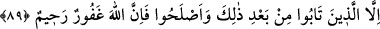

onların azabı hafifletilmeyecek ve tehir edilmeyecektir. Çünkü kâfirlerin dûçâr
olacakları azap hiçbir fayda şâibesi olmayan dâimî, kesintisiz ve katıksız bir zarardır.
Böyle bir azaptan ve bu azaba müncer olacak her davranıştan Allah’a sığınırız.
89. Ancak, bundan sonra tevbe edip yola gelenler başka. Çünkü Allah çok
bağışlayıcı ve merhametlidir.
“Ancak ondan” yani irtidât ettikten (dinden döndükten) sonra tevbe edip ifsâd
ettikleri şeyleri ıslâh edenler hâriç. Çünkü Allah çok bağışlayan, çok esirgeyendir.
Böyle olduğu içindir ki tevbelerini kabul edip kendilerine ihsânda bulunur.
Âyetteki hükümlerin diziliş biçimleri gösteriyor ki; geçmiş dönemde dinden dönüşüne
pişman olup ileride bir daha dinden dönmemeye kesin karar vermek demek olan tevbe
yeterli değildir. İlâveten sâlih amel de gerekir.
“Islâh ederler” lafzı, “bâtınlarının Hakk ile olan münasebetlerini çeşitli
murâkabelerle; yaratıklarla olan münasebetlerini ise, davranışları ile düzeltirler”
demektir.
Bu pişman oluş ve bu tevbe, ancak nefs-i emmârelerinin, kalplerini, tam anlamıyla
istîlâ ederek katılaştırmadığı kişilere nasip ve müyesser olur. Böyle bir kalpte nefs-i
emmâre sıfatlarının arkasında hâlâ nurlu bir pişmanlık istîdâdı vardır, bu sâyede Allah
Teâlâ rahmet ve tevfîki ile bu kulun imdadına yetişir de kul pişman olur ve tezkiye ve
tasfiye kabilinden çeşitli riyâzatlara başlayıp devam eder.
Seriyy es-Sakatî (k.s.)’nin şöyle anlattığı hikâye edilmektedir: “Bir gün, güçsüz
birinin güçlü birine nasıl olup da isyan ettiğine şaştığımı söyledim. Sabah vakti gelip de
namazımı kılınca, bir de baktım, karşımda boylu poslu bir genç adam duruyor.
Arkasında atlılar, önünde uşaklar, kendisi de at sırtında. Atından inip “hanginiz Seriyy-i
Sakatî’siniz?” dedi. Yanımda oturanlar, beni gösterince selam verdi, karşıma oturdu ve
şöyle dedi:
– “Duydum ki, güçlü birine isyan eden güçsüze şaşarım diyormuşsun, bununla neyi
kastediyorsun?” Ben:
– “Hiç kimse, Âdemoğlundan daha zayıf değildir. Böyle olduğu halde, Âdemoğlu yine
de Allah’a isyâna yeltenir” dedim. Bu cevap üzerine adam ağlamaya başladı ve şöyle
dedi:
– “Yâ Seriyy! Rabbimiz, benim gibi günaha batmış birini kabul eder mi?”
– “Günaha batanları, Allah’dan başka kim kurtarabilir?” dedim.
– “Yâ Seriyy! Çok zulümler ettim, peki ne yapmam gerekiyor?” dedi. Dedim ki: